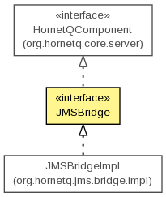

org.hornetq.jms.bridge
Interface JMSBridge
- All Superinterfaces:
- org.hornetq.core.server.HornetQComponent
- All Known Implementing Classes:
- JMSBridgeImpl
public interface JMSBridge
- extends org.hornetq.core.server.HornetQComponent

- Author:
- Tim Fox, Jeff Mesnil
| Methods inherited from interface org.hornetq.core.server.HornetQComponent |
isStarted, start, stop |
pause
void pause()
throws Exception
- Throws:
Exception
resume
void resume()
throws Exception
- Throws:
Exception
getSourceDestinationFactory
DestinationFactory getSourceDestinationFactory()
setSourceDestinationFactory
void setSourceDestinationFactory(DestinationFactory dest)
getTargetDestinationFactory
DestinationFactory getTargetDestinationFactory()
setTargetDestinationFactory
void setTargetDestinationFactory(DestinationFactory dest)
getSourceUsername
String getSourceUsername()
setSourceUsername
void setSourceUsername(String name)
getSourcePassword
String getSourcePassword()
setSourcePassword
void setSourcePassword(String pwd)
getTargetUsername
String getTargetUsername()
setTargetUsername
void setTargetUsername(String name)
getTargetPassword
String getTargetPassword()
setTargetPassword
void setTargetPassword(String pwd)
getSelector
String getSelector()
setSelector
void setSelector(String selector)
getFailureRetryInterval
long getFailureRetryInterval()
setFailureRetryInterval
void setFailureRetryInterval(long interval)
getMaxRetries
int getMaxRetries()
setMaxRetries
void setMaxRetries(int retries)
getQualityOfServiceMode
QualityOfServiceMode getQualityOfServiceMode()
setQualityOfServiceMode
void setQualityOfServiceMode(QualityOfServiceMode mode)
getMaxBatchSize
int getMaxBatchSize()
setMaxBatchSize
void setMaxBatchSize(int size)
getMaxBatchTime
long getMaxBatchTime()
setMaxBatchTime
void setMaxBatchTime(long time)
getSubscriptionName
String getSubscriptionName()
setSubscriptionName
void setSubscriptionName(String subname)
getClientID
String getClientID()
setClientID
void setClientID(String clientID)
getTransactionManagerLocatorClass
String getTransactionManagerLocatorClass()
setTransactionManagerLocatorClass
void setTransactionManagerLocatorClass(String transactionManagerLocatorClass)
getTransactionManagerLocatorMethod
String getTransactionManagerLocatorMethod()
setTransactionManagerLocatorMethod
void setTransactionManagerLocatorMethod(String transactionManagerLocatorMethod)
isAddMessageIDInHeader
boolean isAddMessageIDInHeader()
setAddMessageIDInHeader
void setAddMessageIDInHeader(boolean value)
isPaused
boolean isPaused()
isFailed
boolean isFailed()
setSourceConnectionFactoryFactory
void setSourceConnectionFactoryFactory(ConnectionFactoryFactory cff)
setTargetConnectionFactoryFactory
void setTargetConnectionFactoryFactory(ConnectionFactoryFactory cff)
setTransactionManager
void setTransactionManager(TransactionManager tm)
isUseMaskedPassword
boolean isUseMaskedPassword()
setUseMaskedPassword
void setUseMaskedPassword(boolean maskPassword)
getPasswordCodec
String getPasswordCodec()
setPasswordCodec
void setPasswordCodec(String codec)
Copyright © 2013 JBoss, a division of Red Hat. All Rights Reserved.